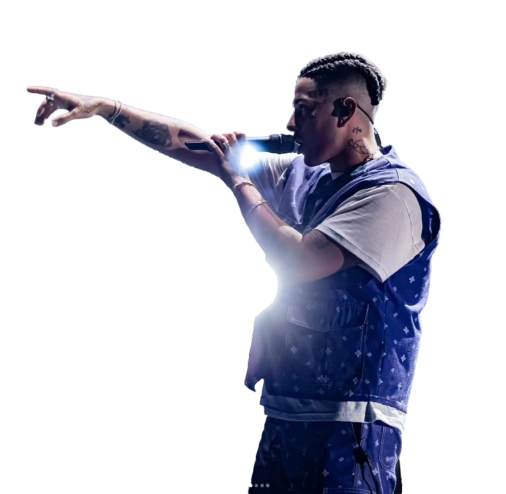

Duki
Mauro Ezequiel Lombardo nació el 24 de junio de 1996. Durante su infancia, tuvo muchas estimulaciones musicales por parte de su familia, escuchando todo tipo de géneros, incluyendo rock nacional, salsa, música disco, pop latino, y punk rock. Los artistas que más escuchaban sus padres eran Virus, Queen, Alejandro Sanz y Luis Miguel, y su hermano era fanático de Luis Alberto Spinetta y Charly García.Antes de descubrir el rap, Lombardo era fanático del garage rock y su banda preferida era Linkin Park, por lo que su deseo de pequeño era formar un grupo de rock.Fue a través de Eminem y 50 Cent que empezaría a desarrollar un largo interés por el hip-hop y el rap.
